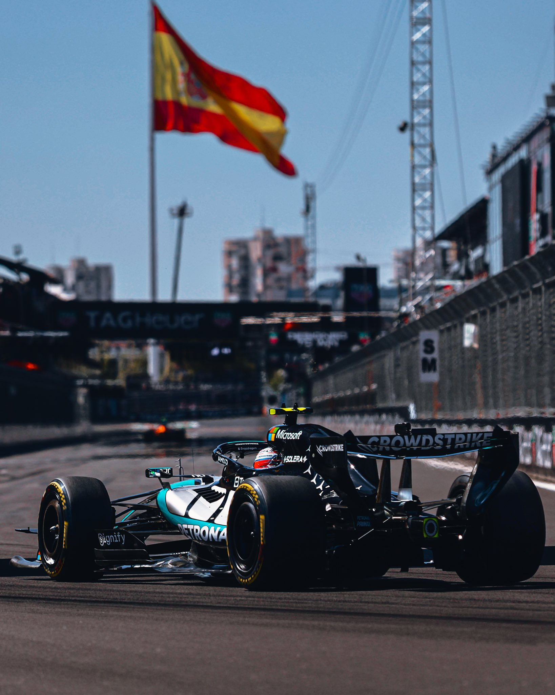

A etapa será a 17ª do campeonato e terá um ingrediente especial: pela primeira vez, o fim de semana em Singapura será realizado no formato sprint, aumentando o peso esportivo de uma prova que já costuma exigir precisão extrema de pilotos e equipes.
É um formato que reduz consideravelmente o tempo disponível para encontrar o melhor acerto do carro em um circuito no qual confiança, aderência e estabilidade são fundamentais.
Singapura também chega em um momento importante do campeonato. Kimi Antonelli lidera a classificação dos pilotos com 320 pontos, seguido pelo companheiro de Mercedes George Russell, com 236. Lewis Hamilton aparece em terceiro, com 214. Entre as equipes, a Mercedes lidera com 556 pontos, contra 405 da Ferrari, 316 da McLaren e 298 da Red Bull.
Considerando o horário de Brasília, a programação da Fórmula 1 em Marina Bay é:
Sexta-feira, 9 de outubro
- Treino livre — 5h30
- Classificação sprint — 9h30
Sábado, 10 de outubro
- Corrida sprint — 6h
- Classificação para o GP — 10h
Domingo, 11 de outubro
- GP de Singapura — 9h
A mudança para o formato sprint torna a sexta-feira especialmente importante. Em vez das três sessões de treinos livres de um fim de semana convencional, os pilotos terão somente uma hora de pista antes de disputar uma sessão competitiva. Em Marina Bay, onde o circuito de rua evolui rapidamente à medida que mais borracha é depositada no asfalto, essa limitação aumenta a dificuldade para encontrar o equilíbrio ideal.
Traçado continua sendo um dos grandes desafios da temporada
O Circuito Urbano de Marina Bay entrou no calendário em 2008 e ficou imediatamente marcado por ter recebido a primeira corrida noturna da história da Fórmula 1. O vencedor daquela edição inaugural foi Fernando Alonso, então piloto da Renault. O espanhol cruzou a linha de chegada à frente de Nico Rosberg e Lewis Hamilton.
Desde então, o GP de Singapura construiu uma identidade própria: muros próximos, pouca margem para erros, calor, umidade e uma prova que exige concentração durante toda a prova. O maior vencedor da história da etapa é Sebastian Vettel, com cinco vitórias. O alemão também divide com Lewis Hamilton o recorde de poles no circuito, com quatro para cada um.
Para 2026, a Fórmula 1 informa uma extensão de 4,927 quilômetros por volta. O Grande Prêmio terá 62 voltas, totalizando 305,337 quilômetros. O recorde oficial de volta do atual traçado pertence a Lewis Hamilton, que marcou 1min33s808 em 2025.
Esses números ajudam a mostrar apenas uma parte do desafio. Diferentemente de pistas permanentes, Marina Bay utiliza ruas da cidade transformadas temporariamente em circuito. A proximidade dos muros reduz drasticamente a possibilidade de corrigir um erro. Uma pequena escapada pode significar quebra de suspensão, dano na asa ou abandono.
Também é uma corrida conhecida pelo desgaste físico. Mesmo sendo disputada à noite, Singapura apresenta temperaturas elevadas e alta umidade. A combinação entre calor, duração da prova e sucessivas mudanças de direção transforma o GP em um dos testes mais intensos da temporada para os pilotos.
Sprint pode mudar completamente o fim de semana
A Fórmula 1 confirmou Singapura entre as etapas com o formato reduzido de treinos, e a programação oficial coloca a classificação sprint já na sexta-feira, seguida pela corrida curta no sábado e pela classificação tradicional algumas horas depois.
Na prática, as equipes terão menos margem para testar configurações diferentes. Encontrar rapidamente altura de carro, equilíbrio aerodinâmico, temperatura correta dos pneus e comportamento nas zebras será ainda mais importante.
Isso também amplia o potencial para surpresas. Um piloto que tenha dificuldades no único treino livre pode chegar à primeira sessão competitiva sem ter encontrado o melhor acerto. Em sentido contrário, uma equipe que comece o fim de semana com uma boa configuração pode transformar essa vantagem inicial em pontos já no sábado.
Antonelli chega como líder
O nome central da temporada até a chegada a Singapura é Kimi Antonelli. O piloto da Mercedes soma 320 pontos e abriu 84 de vantagem sobre George Russell depois da rodada anterior. Russell abandonou a última prova, enquanto Antonelli terminou em segundo, ampliando significativamente sua margem na liderança.
A Mercedes também construiu uma situação confortável entre as equipes. Os 556 pontos colocam o time alemão 151 à frente da Ferrari.
Para Antonelli, portanto, Singapura oferece a oportunidade de administrar e eventualmente aumentar uma vantagem importante. Para Russell, Hamilton, Leclerc, Norris e Verstappen, cada fim de semana passa a ter peso conforme o calendário se aproxima das últimas etapas.
Verstappen chega embalado por vitória
Max Verstappen chega a Marina Bay depois de vencer o GP do Bahrein de 2026, disputado em Sepang. O holandês largou da pole e conquistou sua primeira vitória da temporada de 2026 após uma corrida marcada pela chuva e por mudanças nas condições da pista.
O resultado coloca a Red Bull em um cenário interessante antes de Singapura. Embora Verstappen esteja distante da liderança do campeonato, o desempenho recente mostra que o carro pode ser competitivo em determinados circuitos. Marina Bay, porém, apresenta características completamente diferentes de Sepang: as retas são menores, a sequência de curvas é intensa e a capacidade de gerar aderência mecânica ganha enorme importância.
Russell defende a vitória de 2025
A referência mais recente em Marina Bay é George Russell. O britânico venceu o GP de Singapura na temporada passada pela Mercedes depois de largar na pole position. Verstappen foi o segundo colocado, enquanto Norris terminou em terceiro.
O histórico reforça a expectativa em torno da Mercedes, mas a edição de 2026 ocorre dentro de uma realidade técnica diferente. A temporada inaugurou um novo ciclo de regulamentos da Fórmula 1, portanto resultados anteriores funcionam mais como referência histórica do que como garantia de competitividade.
Sebastian Vettel segue como o piloto com mais vitórias na história do GP de Singapura, com cinco triunfos. O caráter específico da pista ajuda a explicar por que experiência e confiança sempre tiveram peso elevado em Marina Bay.
Bortoleto representa o Brasil
Gabriel Bortoleto será novamente o representante brasileiro no grid. O piloto da Audi ocupa a 14ª posição no campeonato, com 10 pontos conquistados até a chegada a Singapura.
Marina Bay oferece um desafio particular para Bortoleto e para todo o pelotão intermediário. Como os erros costumam ser mais caros em circuitos de rua, uma classificação eficiente e uma corrida limpa podem abrir oportunidades de pontuação mesmo para equipes que normalmente não disputam as primeiras posições.
Onde assistir ao GP de Singapura
No Brasil, a Fórmula 1 tem transmissão da Globo e do sportv em 2026. Para o fim de semana de Singapura, o sportv 3 transmite as atividades da etapa, enquanto a TV Globo exibe a corrida de domingo.
O que esperar do final de semana
O traçado reúne características que fazem da etapa uma das mais singulares da Fórmula 1: corrida noturna, pista de rua, muros próximos, desgaste físico elevado e pouca margem para erro. Em 2026, o formato sprint adiciona uma variável importante porque reduz o tempo de preparação e coloca pontos em disputa antes mesmo do Grande Prêmio.
A situação do campeonato aumenta ainda mais o peso da etapa. Antonelli possui uma vantagem expressiva, a Mercedes controla a classificação de equipes e Verstappen chega de vitória. Hamilton e Leclerc mantêm a Ferrari em segundo entre os construtores, enquanto McLaren e Red Bull travam uma disputa próxima logo atrás.
Depois de Singapura, a temporada seguirá para Estados Unidos, México, Brasil, Las Vegas, Catar e Abu Dhabi. A passagem por São Paulo colocará novamente Interlagos no centro do campeonato, circuito cuja tradição pode ser conhecida em detalhes na história do GP de Interlagos na Fórmula 1.
Antes disso, porém, todas as atenções estarão voltadas para Marina Bay. O GP de Singapura continua sendo uma corrida em que velocidade pura não basta: é preciso acertar a preparação, sobreviver aos muros, administrar pneus e temperatura e manter concentração até a bandeirada. Com sprint pela primeira vez e um campeonato entrando em sua fase decisiva, a edição de 2026 reúne todos os elementos para ser uma das etapas mais importantes da reta final da Fórmula 1.